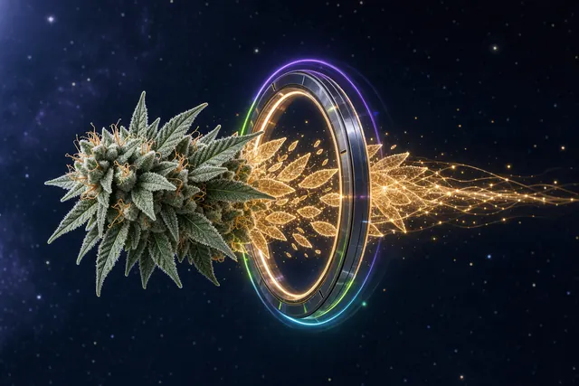
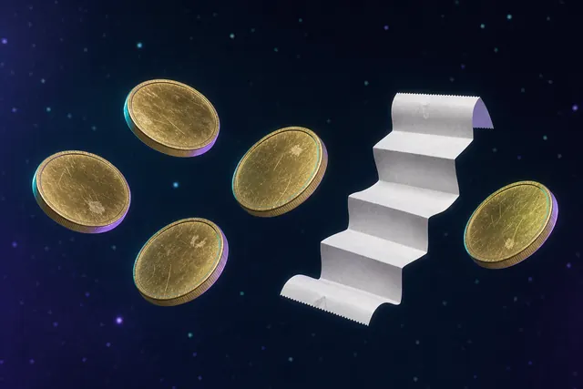

- Home
- Learn
Field Notes / Learning Center
Cannabis Learning Center
Free cannabis education written for real people. Understand what you are buying, how it works, how to dose safely, and what New York law allows. No jargon unless we explain it first.
- 25
- Guides
- 4
- Topics
- Free
- Access
- 100%
- Lab-Tested Info
Start Here
Beginner
New to cannabis? These guides explain the fundamentals in plain language. No jargon, no assumptions about your experience level.
Cannabis Basics
What cannabis is, how it works in the body, and the difference between THC and CBD at a high level. The essentials before your first purchase.
Read guide 02
02First-Time Dispensary Visit
What to bring, what to expect at the counter, how to ask questions, and how to choose your first product. A walkthrough of the entire experience.
Read guide 03
03Choosing a Strain
Indica, sativa, hybrid: what the labels actually mean, why terpenes matter more than strain type, and how to find what works for you.
Read guideProducts
Product Education
Understand what is on our shelves. Each guide explains a product type, how to use it, dosing, onset times, and who it is best for.
 04
04Types of Cannabis Products
A side-by-side comparison of flower, edibles, vapes, pre-rolls, concentrates, and tinctures. Onset, duration, potency, and convenience rated.
Read guide 05
05Consumption Methods
Smoking, vaping, eating, sublingual, and topical. How each method delivers cannabinoids differently and what that means for your experience.
Read guide 06
06Edibles Dosing Guide
Start low, go slow. How milligrams translate to effects, how to read edible labels, timing expectations, and what to do if you take too much.
Read guide
Our Philosophy
“An informed customer makes better choices. We would rather you understand what you are buying than just sell you the most expensive thing on the shelf.”
Science
Cannabis Chemistry
The science behind the plant. Understand cannabinoids, terpenes, and how different compounds create different effects.
 07
07THC vs CBD
The two most prominent cannabinoids compared. Psychoactive vs non-psychoactive, medical research, ratios, and how to choose between them.
Read guide 08
08Terpenes Explained
Myrcene, limonene, pinene, caryophyllene, and more. How terpene profiles shape the aroma, flavor, and effect of cannabis.
Read guide 09
09How Cannabis Effects Work
The endocannabinoid system, the entourage effect, tolerance, and why the same product can affect two people differently.
Read guideSafety
Responsible Use
Use cannabis responsibly. Storage, legal requirements, harm reduction, and practical safety information for New York consumers.
 10
10Responsible Cannabis Use
Setting and dosing, when not to use cannabis, mixing with alcohol or medications, recognizing overconsumption, and taking a tolerance break.
Read guide 11
11Storing Cannabis Products
Temperature, humidity, light, and container best practices for flower, edibles, vapes, and concentrates. Keep products effective and safe.
Read guide 12
12New York Cannabis Laws
What is legal for adults 21+ in New York State. Possession limits, where you can consume, public use rules, and driving regulations.
Read guideMore Guides
Browse Every Guide
Deeper dives and comparisons across strains, products, cannabinoids, and New York specifics.
25 guides
- Cannabis BasicsWhat cannabis is, how it works in the body, and the difference between THC and CBD at a high level. The essentials before your first purchase.
- First-Time Dispensary VisitWhat to bring, what to expect at the counter, how to ask questions, and how to choose your first product. A walkthrough of the entire experience.
- Cannabis Strains GuideIndica, sativa, hybrid: what the labels actually mean, why terpenes matter more than strain type, and how to find what works for you.
- Types of Cannabis ProductsA side-by-side comparison of flower, edibles, vapes, pre-rolls, concentrates, and tinctures. Onset, duration, potency, and convenience rated.
- Consumption MethodsSmoking, vaping, eating, sublingual, and topical. How each method delivers cannabinoids differently and what that means for your experience.
- Edibles Dosing GuideStart low, go slow. How milligrams translate to effects, how to read edible labels, timing expectations, and what to do if you take too much.
- THC vs CBDThe two most prominent cannabinoids compared. Psychoactive vs non-psychoactive, medical research, ratios, and how to choose between them.
- Terpenes ExplainedMyrcene, limonene, pinene, caryophyllene, and more. How terpene profiles shape the aroma, flavor, and effect of cannabis.
- How Cannabis Effects WorkThe endocannabinoid system, the entourage effect, tolerance, and why the same product can affect two people differently.
- Responsible Cannabis UseSetting and dosing, when not to use cannabis, mixing with alcohol or medications, recognizing overconsumption, and taking a tolerance break.
- Storing Cannabis ProductsTemperature, humidity, light, and container best practices for flower, edibles, vapes, and concentrates. Keep products effective and safe.
- New York Cannabis LawsWhat is legal for adults 21+ in New York State. Possession limits, where you can consume, public use rules, and driving regulations.
 Licensed vs Unlicensed DispensaryHow to tell if a NYC dispensary is legal and how to verify an OCM license.
Licensed vs Unlicensed DispensaryHow to tell if a NYC dispensary is legal and how to verify an OCM license.
THCA vs THCRaw vs activated — and how heat (decarboxylation) changes one into the other.- CBD vs CBN vs CBGThe minor cannabinoids explained, neutrally and without the hype.
 Choosing a StrainHow to pick a strain by terpenes, effects, and your own goals.
Choosing a StrainHow to pick a strain by terpenes, effects, and your own goals. Cannabis Concentrates GuideRosin, resin, badder, sauce, diamonds, and shatter — what they are.
Cannabis Concentrates GuideRosin, resin, badder, sauce, diamonds, and shatter — what they are. Pre-Rolls vs FlowerConvenience vs control — which format fits how you like to consume.
Pre-Rolls vs FlowerConvenience vs control — which format fits how you like to consume. Live Resin vs DistillateFull-flavor vs high-potency vape concentrates, compared.
Live Resin vs DistillateFull-flavor vs high-potency vape concentrates, compared. How to Read Cannabis LabelsDecode potency, total THC, COAs, and required NY warnings.
How to Read Cannabis LabelsDecode potency, total THC, COAs, and required NY warnings. Cannabis and SleepA neutral look at what people consider in nighttime products.
Cannabis and SleepA neutral look at what people consider in nighttime products. Cannabis and AnxietyWhat consumers think about when they want to unwind — not medical advice.
Cannabis and AnxietyWhat consumers think about when they want to unwind — not medical advice.- How to Get Cannabis in BrooklynThe legal way to buy adult-use cannabis in Brooklyn — walk-in, verified, 21+.

Cannabis Tax in NYCWhat you actually pay at a NY dispensary register, and why.- How to Choose a Dispensary Near YouA neutral checklist for picking the best licensed dispensary near you.

In-Store Education
Prefer to learn in person?
Our staff answers questions all day. Walk into Take N' Toke with zero cannabis knowledge and walk out understanding exactly what you bought, how to use it, and what to expect. That is what we are here for.

Visit Us
Visit our dispensary.
994 Atlantic Avenue, Brooklyn. Our staff will walk you through every product, answer every question, and make sure you leave with exactly what you need.
Start Learning
Knowledge is the best first step.
Whether you are brand new to cannabis or looking to deepen your understanding, our guides are written to help you make informed decisions. Start with the basics or jump into whatever topic interests you most.